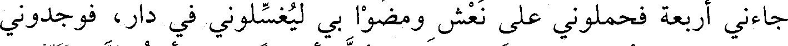
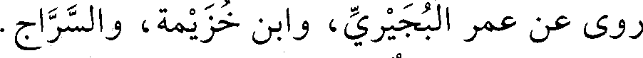
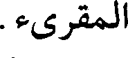
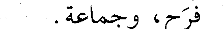
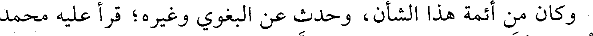

File: 001140.gt.txt (if the image is defective, simply delete all Arabic text and the line will be excluded)
على البلاط مثل الرية، وكان في البرد والجليد، وصلبت واشتد علي
File: 001141.gt.txt (if the image is defective, simply delete all Arabic text and the line will be excluded)
الجليد، فبعد ثلاثة أيام عهدي بالحدائين يقولون: نعرف الوالي أن هذا قد
File: 001142.gt.txt (if the image is defective, simply delete all Arabic text and the line will be excluded)
مات، فأتوه، وكان الوالي جيش بن الصمصامة فقال: أنزلوه، فألقوني على
File: 001143.gt.txt (if the image is defective, simply delete all Arabic text and the line will be excluded)
باب داود، فقوم يترحمون علي وآخرون يلعنوني، فلما كان بعد العشاء
File: 001144.gt.txt (if the image is defective, simply delete all Arabic text and the line will be excluded)

جاءني أربعة فحملوني على نعش ومضوا بي ليغسلوني في دار فوجدوني
File: 001145.gt.txt (if the image is defective, simply delete all Arabic text and the line will be excluded)
حيا، فكانوا يصلحون لي خزيرة بلوز وسكر أسبوعا. ثم رأيت النبي صعلم في
File: 001146.gt.txt (if the image is defective, simply delete all Arabic text and the line will be excluded)
المنام ومعه أصحابه العشرة فقال: يا أبا بكر، ترى ما قد جرى على
File: 001147.gt.txt (if the image is defective, simply delete all Arabic text and the line will be excluded)
صاحبك؟ قال: يا رسول الله فما أصنع به؟ قال: اتفل في فيه، فتفل في في،
File: 001148.gt.txt (if the image is defective, simply delete all Arabic text and the line will be excluded)
(الوفيات)
File: 001149.gt.txt (if the image is defective, simply delete all Arabic text and the line will be excluded)
سنة إحدى وستين وثلاث مئة ومن توفي فيها
File: 001150.gt.txt (if the image is defective, simply delete all Arabic text and the line will be excluded)
1 - أحمد ابن المحدث محمد بن العباس بن نجيح البغدادي، أبو
File: 001151.gt.txt (if the image is defective, simply delete all Arabic text and the line will be excluded)
الحسن، رئيس المعتزلة ببغداد.
File: 001152.gt.txt (if the image is defective, simply delete all Arabic text and the line will be excluded)
ورخه طلحة في ربيع الآخر، وقال: كان رئيس المعتزلة.
File: 001153.gt.txt (if the image is defective, simply delete all Arabic text and the line will be excluded)
2 - أحمد بن محمد بن سعيد بن سهل بن شبرة(1) ، بالمعجمة
File: 001154.gt.txt (if the image is defective, simply delete all Arabic text and the line will be excluded)
والتثقيل، أبو حامد النيسابوري الصيرفي الزاهد الثبت، نزيل سمرقند.
File: 001155.gt.txt (if the image is defective, simply delete all Arabic text and the line will be excluded)

روى عن عمر البجيري، وأبن خزيمة، والسراج.
File: 001156.gt.txt (if the image is defective, simply delete all Arabic text and the line will be excluded)
قال الإدريسي: ثقة، كتبنا عنه، ومات بسمرقند في شعبان(2) .
File: 001157.gt.txt (if the image is defective, simply delete all Arabic text and the line will be excluded)
3 - أحمد بن مسور الأمير.
File: 001158.gt.txt (if the image is defective, simply delete all Arabic text and the line will be excluded)
ولي دمشق للحسن بن أحمد القرمطي المعروف بالسيد عند تغلبة ثانيا
File: 001159.gt.txt (if the image is defective, simply delete all Arabic text and the line will be excluded)
على الشام، وذلك في رمضان. ومات بعد عشرة أشهر، أعنى أحمد(3) .
File: 001160.gt.txt (if the image is defective, simply delete all Arabic text and the line will be excluded)
4 - إبراهيم بن أحمد بن إبراهيم البغدادي البزوري، أبو إسحاق
File: 001161.gt.txt (if the image is defective, simply delete all Arabic text and the line will be excluded)

المقرىء.
File: 001162.gt.txt (if the image is defective, simply delete all Arabic text and the line will be excluded)
قرأ على إسحاق الخزاعي، والحسن بن الحسين الصواف، وأحمد بن
File: 001163.gt.txt (if the image is defective, simply delete all Arabic text and the line will be excluded)

فرح، وجماعة.
File: 001164.gt.txt (if the image is defective, simply delete all Arabic text and the line will be excluded)

وكان من أئمة هذا الشأن، وحدث عن البغوي وغيره؛ قرأ عليه محمد
File: 001165.gt.txt (if the image is defective, simply delete all Arabic text and the line will be excluded)
بن عمر بن بكير، وعلي بن محمد الحذاء، وعبدالباقي بن الحسن.
File: 001166.gt.txt (if the image is defective, simply delete all Arabic text and the line will be excluded)
مات في ذي الحجة(4) .
File: 001167.gt.txt (if the image is defective, simply delete all Arabic text and the line will be excluded)
193
File: 001168.gt.txt (if the image is defective, simply delete all Arabic text and the line will be excluded)
100 - أحمد بن محمد بن أيوب، أبو بكر الفارسي الواعظ
File: 001169.gt.txt (if the image is defective, simply delete all Arabic text and the line will be excluded)
المفسر، نزيل نيسابور.
To Save: `Ctrl+s`, make sure to choose `Webpage, complete`!